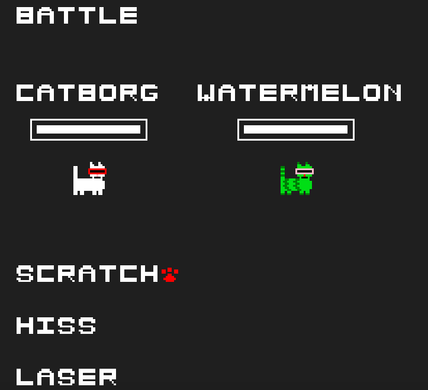
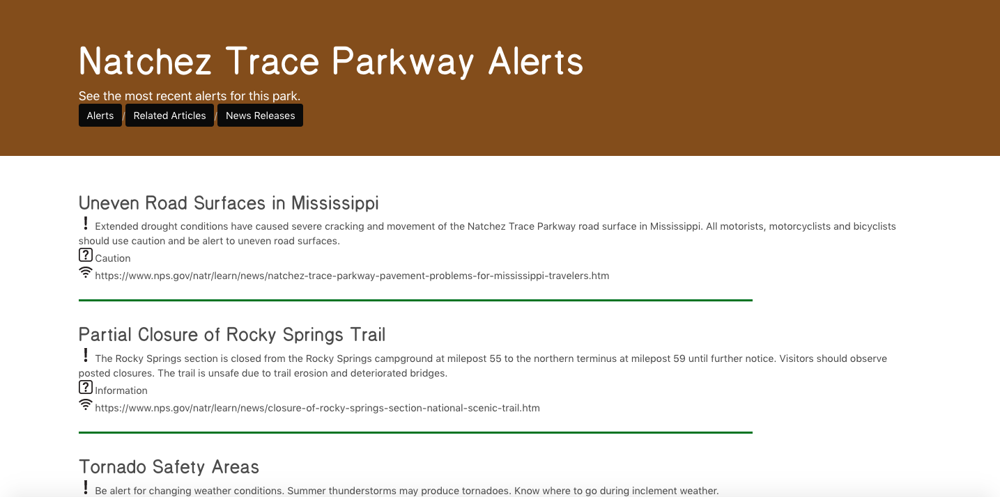

INTERNSHIP EXPERIENCES
Microsoft, Explore Intern
May 2020 - August 2020
Interned for OneDrive/SharePoint Collab Sharing team, starting in a program manager role before moving to software engineering and implementing modernized access request user experience using React/Typescript
Participated in Microsoft Global Hackathon, leading team with 4 full-time software engineers to produce a working demo and receiving ODSP overall winner recognition after competing against ~60 other project demos!
National Center for Supercomputing Applications, SPIN Intern
August 2019 - May 2020
Developed Cybersecurity and Networking team security tools using Python/Django/HTML/CSS/Javascript, network data to improve security across NCSA infrastructure; participated in workshops, talks, networking events
Presented poster at 2020 Women in Cybersecurity conference (virtual due to COVID-19), selected as part of top 3 undergraduate presenters; presented 15-minute talk to NCSA interns and full-time staff over progress made
MIT Lincoln Laboratory, Summer Research Intern
May 2019 - August 2019
Aided Tactical Networks group in developing innovative distributed peer-to-peer networking technologies; benchmarked and implemented potential solutions to provide an answer integrated in large-scale project
Wrote final research paper over work, presented 30-minute talk to research group and other interns
Lead a team of 3 interns proposing research idea Lab-wide to receive offer for year-round funding and mentorship
Software Engineer Intern, NASA Marshall Space Flight Center
May 2018 - August 2018
Worked in Office of the Chief Engineer, contributing to content and analysis of Agency-wide NASA Software Engineering Requirements (NPR 7150.2C) through research into industry standards and internal requirements
Requirements I worked on are now official policy until 2024, readable here!
Visited Armstrong Flight Research Center one week, had fun experiencing a different center
TEACHING
Undergraduate Course Assistant, Computer Architecture
January 2020 - Present
Co-led weekly 30-student lab sections pre-COVID; hold weekly office hours over lab content in Verilog, MIPS
Following virtual course transition, produce videos providing overview of lab handout concepts/requirements
Develop C++ game for students to compete using MIPS assembly bots, designing new game mechanics each semester in collaboration with ~8 team members
Undergraduate Course Assistant, Software Design Studio
January 2019 - May 2019
Lead weekly code review instructing group of 6 students in code quality, style, Git commit history/test-driven development, and unit testing quality on C++/Java assignments
Hosted office hours, answered Piazza questions to help students debug their code
LEADERSHIP
Technical Lead, UIUC Women in Cybersecurity Chapter
May 2020 - present
Develop technical workshops for club members; so far, have covered topics such as web security, networking, secure machine learning
Workshop slides with working code available at https://github.com/danielazieba/wicys-uiuc-fa20-sp21
Lead development of a team project to be presented at EOH, a multiplayer team cybersecurity-themed game
Department Editor, ACM XRDS
January 2018 - present
Create various departments (Conferences, Upcoming Events, Back, Milestones; varies per issue) for largest nationally published student computer science magazine; around 20,000 copies distributed digitally and 10,000 in print per issue
Issues contributed to: Summer 2018, Fall 2018, Winter 2018, Spring 2019, Summer 2019, Fall 2019, Winter 2019, Spring 2020, Summer 2020, Fall 2020 (all viewable at https://xrds.acm.org)
Startup Showcase Director, Engineering Open House Planning Committee
August 2019 - May 2020
Organized Startup Showcase highlighting various alumni, faculty, and student startups in the Illinois community (though EOH 2020 was cancelled due to COVID-19)
Volunteered as one of ~20 undergraduate students who plan EOH, largest student-run event on UIUC campus bringing 35,000 visitors to around 300 exhibits highlighting UIUC engineering
MISC
Capable of making hand-pulled noodles (lamian) that can thread a needle
I am just really proud of this, it took way more tries than macarons to perfect and I still have plenty of room to improve.
2020 Women in Cybersecurity Student Scholarship Recipient
Was one of 750 student scholarship recipients and one of 30 student poster presenters (though WiCyS 2020 was made virtual due to COVID-19)
2019 Aspiring Technologists Scholarship Recipient
Attended Grace Hopper Celebration 2019 through scholarship, had a fantastic time meeting other women in tech!
UIUC Illinois Scholars Undergraduate Research Participant
Received opportunities including monthly research talks, semester-long research seminar, presented research poster virtually at 2020 ISUR Poster Expo
Rewriting the Code National Fellow; 2018 - 2019 school year, 2019 - 2020 school year, and 2020 - 2021 school year
Receive professional opportunities including mentorship from other students, technical webinars, company talks, and physical community events
Currently a Big in RTC mentorship program, where fellows can mentor Littles 1:1
2018 Siemens Competition Semifinalist
One of 300 semifinalists of around 3,000 applicants in last cohort of this national high school research competition before it shut down
PROJECTS
Some are from class, some are from research, some are for fun. Some are available on my GitHub account (click here for it).
UIUC WiCyS EOH game - in progress since Fall 2020
There are four of us working on this right now with a deadline of March 2021 for our Engineering Open House Exhibit. It's going to be great. And a cybersecurity education game which will be lacking in hacker aesthetics. Code will be released when we're done.
BRRRRRRRR - Summer 2020
An app that helps you track your stonks better - worked on for UIUC CS411 with teammates Miranda Li, Sayan Sur, and Kyle Jew.
Built using Python, Django, and MySQL, with a lot of JSON parsing and API calls!
In addition to portfolio management, we can fetch current NASDAQ listings, prices, etc., parse senator stock trades, and perform Reddit/Twitter sentiment analysis about each ticker!
Of the 59 projects submitted for our 411 semester, the top 5 were selected to receive extra credit. We were one of the top 5.
Microsoft Hackathon Project - Summer 2020
Description to be added if it becomes permitted in the future. All you need to know is that it was the ODSP overall winner.
Watermelon cat game - Summer 2020

A game built with React and Typescript that lets you control a cat and spawn a turn-based battle sequence upon collision with enemies.
p-hacker - Summer 2020

A Django web app that takes in your desired p-value and data as input and changes the data so that you get the p-value you want.
Developed with Trevor Moyer to help those in academia publish papers faster. ;)
SPIMbot - Spring 2020
Every semester, CS233 produces a game for students enrolled to submit a MIPS assembly bot in as their lab submission.
Worked on the Spring 2020 and Fall 2020 SPIMbots in a team of about 8 members of course staff, contributing to development of core game mechanics such as memory-mapped IO implementation with C++ and producing a 15-minute intro video for students.
NPS Park App - Summer 2019

Flask app displaying National Park Service park information using API calls, allowing users to search for parks and select more info about a particular part such as news releases and current weather conditions.
Mus Rover - Spring 2019
I worked as a research assistant for Haizi Yu, at the time working for Lav Varshney, during the Spring 2019 semester and worked on his project leveraging AI to help improve music theory teaching.
Not sure what the current state of the project is, but at the time I helped set up some backend infrastructure for the web interface with the intent of the project later being tested in the UIUC Music Department.
Frontier News - Fall 2018
C++ project scraping university news websites for articles about research projects using Python/BeautifulSoup. The C++ part is a UI built using openFrameworks displaying these articles, allowing for some sorting. The amount of effort needed to make this UI without any form of HTML/CSS was a lot more than initially expected.
Balloon Fight - Spring 2017
My first real programming project I was proud of, developed with Bronson McQueen. Balloon Fight, like the NES title, but minus the cute graphics and plus the slowness of making a game in Mathematica for some reason. We implemented both the general Balloon Fight experience of progressing through different stages by stepping on enemies and Balloon Trip, which keeps generating sparks until you hit one!